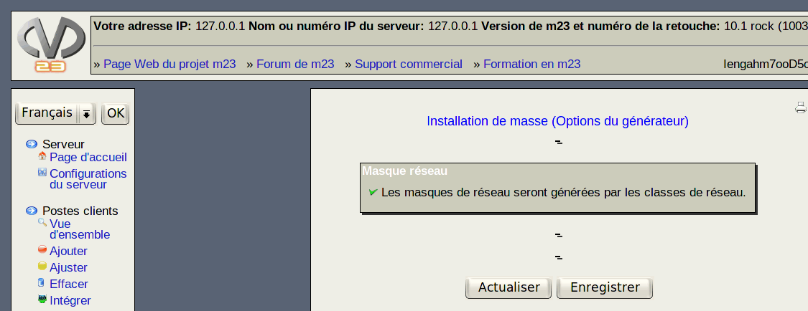

Dans ce dialogue, vous pouvez entrer les paramètres pour les générateurs des propriétés suivantes:
- Nom du poste client: Définissez la base des noms des postes client et un numéro de départ. Le nombre de noms des postes client nécessaire sera créé selon le schéma base du nom du poste client numéro d'ordre. Les noms de postes client déjà existant seront sautés pendant ce processus. Exemple: base des noms des postes client=m23client, numéro de départ=12 génère les noms de postes client m23client12, m23client13, ...
- Nom d'authentification sur le système: C'est le nom avec lequel l'utilisateur peut s'authentifier sur le système du poste client. Vous avez le choix entre deux méthodes de génération. La variante incrémentale fonctionne de manière identique à celle de Nom du poste client. Il est également possible de choisir un nom d'authentification construit avec la première lettre du prénom concaténée au nom de famille complet. (Générer à partir du prénom et du nom de famille).
- Prénom: La génération des prénoms (qui seront également les nom d'authentification sur le système) sera exécuté de la même façon.
- Adresse IP: Vous pouvez définir les plages d'adresses IP, parmis lesquelles les adresses IP libres seront recherchées. Une option supplémentaire peut être activée afin d'effectuer un test ping pour chaque adresse IP dans la plage demandée; en découlera la génération des adresses IP n'étant pas déjà utilisées sur le réseau local.
- Masque réseau: Les masques réseaux seront calculés automatiquement d'après la norme standardisée des classes réseau (A, B, C).
Ceci est par définition:
- Première connexion au système: Ces mots de passe peuvent être générés de manière purement aléatoire (Mots de passe crées de manière aléatoire) ou par un algorithme aléatoire simplement mémorisable pour les hommes (Mots de passe crées avec PwGen). La longueur des mots de passe générés peut varier entre 6 et 8 caractères. Il est recommandé de garder la longeur par défaut de 8 caractères.
- ID de l'utilisateur: Définissez le numéro de début à partir duquel les identifiants utilisateur (libres) seront utilisés.
- ID du groupe: Définissez le numéro de début à partir duquel les identifiants des groupes (libres) doivent être utilisés.
root
2017-06-22